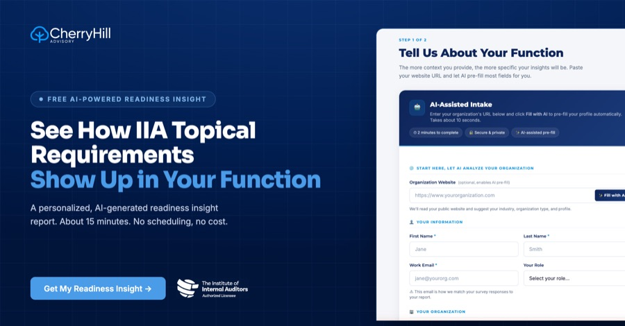

ML
𝗪𝗲 𝗯𝘂𝗶𝗹𝘁 𝘀𝗼𝗺𝗲𝘁𝗵𝗶𝗻𝗴 𝘀𝗺𝗮𝗹𝗹. 𝗚𝗼 𝗯𝗿𝗲𝗮𝗸 𝗶𝘁.
Cybersecurity has been mandatory since February 5. Third-Party lands September 15. Anti-corruption is in exposure draft right now. And a lot of audit plans I see reference the new requirements without actually addressing them. That is not a controversy take, that is just where the calendar caught most of us off guard.
The question I get most is the simplest one: which of these actually apply to us, and how far behind are we?
So we built something that answers it. Paste your organization's website, let it read your public profile, answer a couple of questions, and you get a personalized readiness insight report back. No scheduling. No cost.
I will be honest about why it is public. It is a teaser and it is a test. It is the smallest thing in a toolbox we are announcing on Monday, and I would rather you try the small thing and tell me what is wrong with it than take my word for the rest.
Run it, then tell me where it got you wrong.
#InternalAudit #IIAStandards #oneiia
